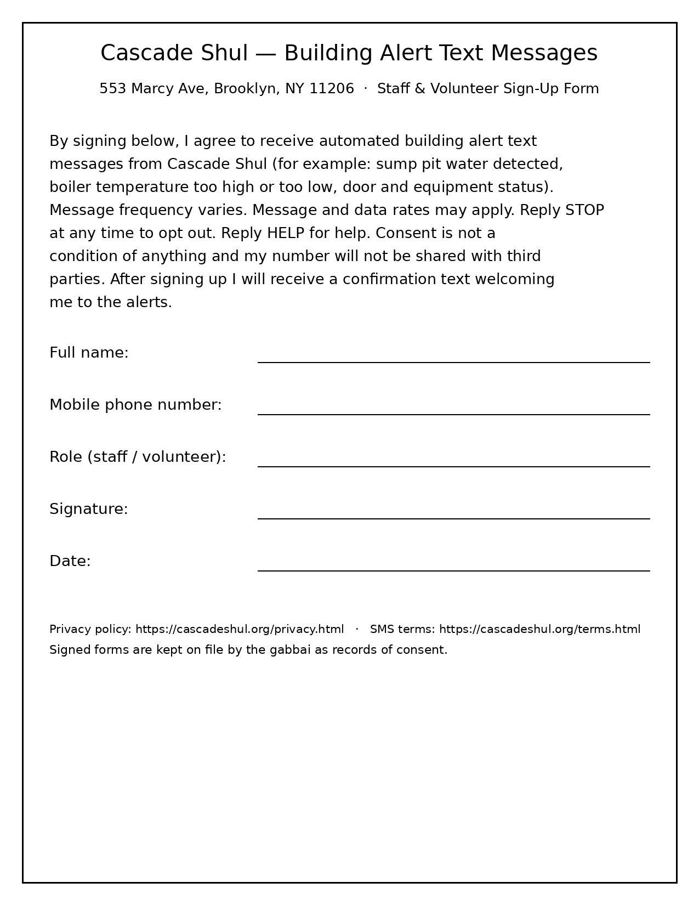

Cascade Shul (553 Marcy Ave, Brooklyn, NY 11206) sends automated building alert text messages (sump pit water, boiler temperature, door/equipment status) only to staff and volunteers who opt in by signing the paper form below.
Message frequency varies. Msg & data rates may apply. Reply STOP to opt out, HELP for help.
Opt-in paper form (image) · Privacy policy · SMS terms · Home
